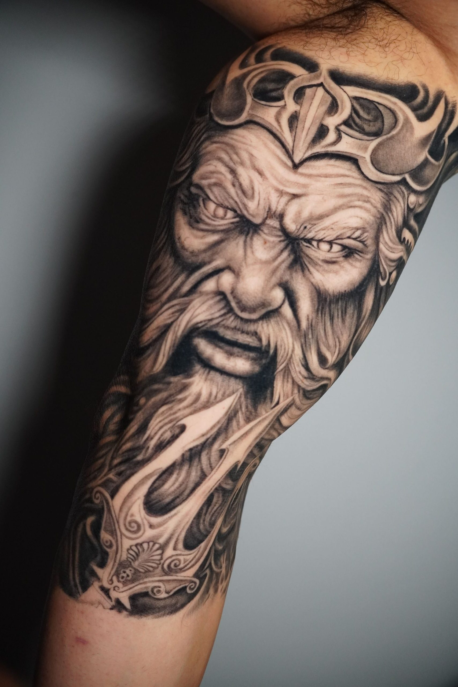
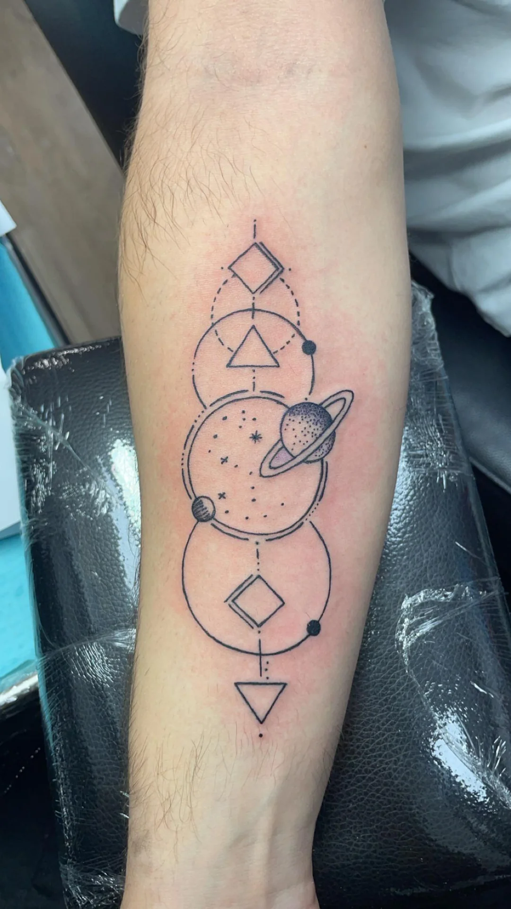
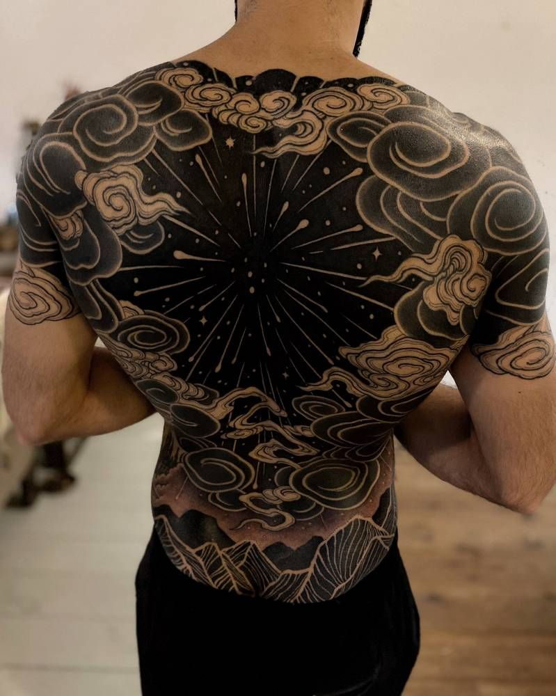
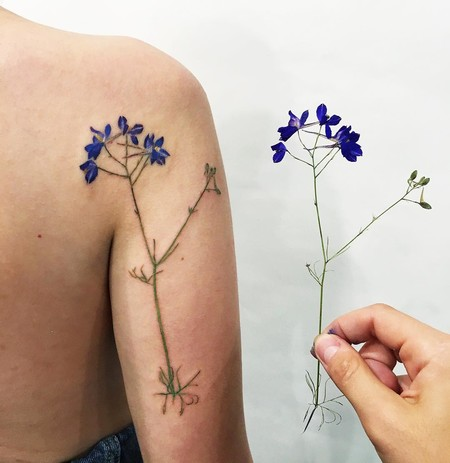

Carlitos Pérez
Tatuaje de autor en el corazón de Montevideo.
Especialista en realismo oscuro y técnica de línea fina.

La piel como
lienzo eterno
Con más de una década de trayectoria en la escena uruguaya, Carlitos Pérez ha definido un estilo que fusiona la precisión técnica con una narrativa visual profunda. Su enfoque se centra en piezas personalizadas que respetan la anatomía y el paso del tiempo.
- Estilo
- Realismo · Blackwork · Fine Line
- Origen
- Montevideo, Uruguay
Hitos en la
industria
-
Egresado de UM de la Tecnicatura en Tatuajes
Graduación de la Tecnicatura en Tatuajes de la UM (Universidad de Montevideo)
-
Apertura de Estudio Propio
Inauguración de su espacio privado de diseño y tatuaje en la zona céntrica de Montevideo.
-
Mejor Realismo — Expo Tattoo Uruguay
Primer premio en la categoría Realismo en la convención más importante del país.
Piezas
recientes




El
Estudio
Ubicado en un edificio histórico restaurado. Un ambiente privado y aséptico diseñado para la comodidad del cliente durante sesiones largas.
Dirección Av. 18 de Julio 1234, Ciudad Vieja Montevideo, Uruguay